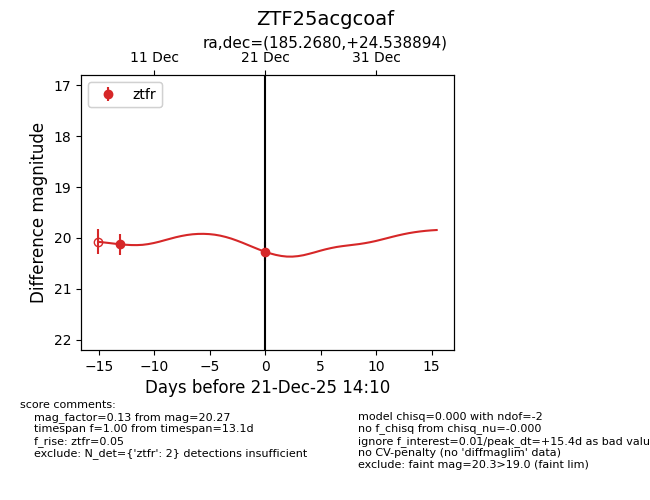
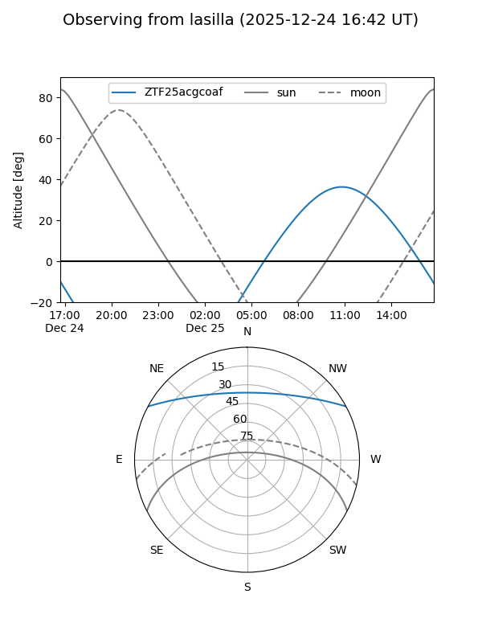
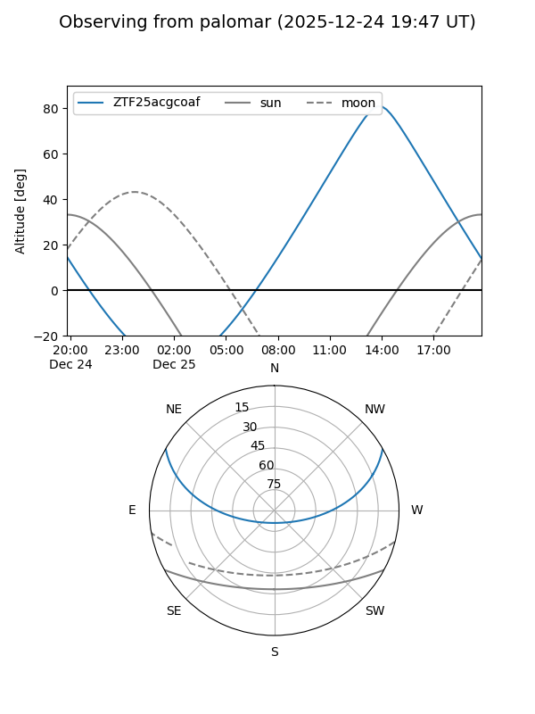
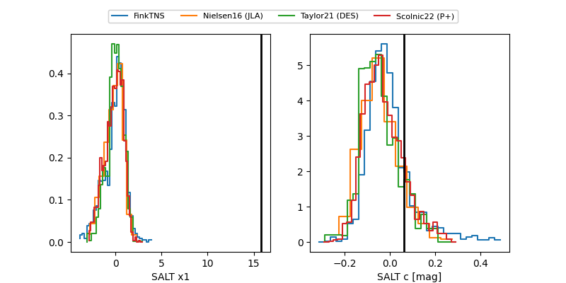

ZTF25acgcoaf
Target ZTF25acgcoaf at 2025-12-31 18:00
Aliases and brokers:
FINK: link
Lasair: link
ALeRCE: link
alt names
ZTF25acgcoaf (ztf,fink_ztf)
Coordinates:
equatorial (ra, dec) = 185.2680,+24.53889
equatorial (HMS+DMS) = 12:21:04.33,+24:32:20.02
galactic (l, b) = (232.0009,+82.69485)
Flags:
Photometry:
last ztfr=20.27
2 ztfr detections
Lightcurve

Visibility


Additional plots
